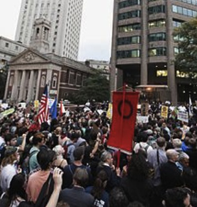

An interview with Professor Susan Buck-Morss, philosopher at the City University of New York, in Kultura Liberalna nr 155, December 27, 2011. Joanna Kusiak is a sociologist and urban/political activist from Warsaw (Poland), Fulbright Advanced Research Fellow at City University of New York. She is writing a dissertation about urban revolution in Warsaw at the University of Warsaw and Darmstadt University of Technology. She lives between Warsaw, Berlin and New York.

Occupy Wall Street.
Joanna Kusiak: You’re a politically engaged philosopher. You’ve signed a letter of support for Occupy Wall Street and CUNY’s student protests, you talk about OWS during your philosophical seminar and at the same time you claim there is no political ontology. Why?
Susan Buck-Morss: My prejudice against ontology comes from reading Adorno and his virulent criticism of existential ontology as he sees it so powerfully expressed in Heidegger, but then leading to such disastrous political consequences: the impotence of his philosophy vis-à-vis fascism, if not its actual collaboration. By resolving the question of Being before subsequent political analyses, the latter have no philosophical traction. They are subsumed under the ontological a priori that itself remains indifferent to their content.
JK: What does it mean in terms of political action?
SBM: If you start from a claim of ontological position, everything has to follow from it. It doesn’t matter if you choose your ontology because of who you are (some identity politics) or if you begin with something like “All history is the history of class struggle” (which is an ontological principle, for example, Antonio Negri holds on to) – you fundamentally know the answer to anything, before you even start. The only criterion left for accuracy is internal consistency. I think it is true not only for leftist identity, but also for Anarch-ism vs. Marx-ism, vs. any other -ism. There may be times when anarchist politics is absolutely called for, but not because I have decided that ‘I am an anarchist’, not because anarchism is my principle, but because that is a powerful move right now. In order to do politics that way, you’ve got to make judgments every particular time, you cannot deduce anything from first principles.
JK: This reminds me of my favorite Walter Benjamin’s quotation. In one of his letters to Gershom Scholem, concerning political action, he says that in politics you have to act ‘always radically, never consistently’.
SBM: It’s absolutely true. Every time you have to allow for the possibility that you may be wrong and start thinking anew again and again. Then you have to pay attention to what’s going on. You can’t presume ‘Oh, it’s capitalism’ or ‘Oh, it’s neoliberalism’. It’s particularly important now, because some real shift is going on, a shift maybe bigger than the one which occurred in 1989.
JK: Why?
SBM: Because it’s not just a geopolitical shift, there is a real questioning of all the fundamental categories with which we’re dealing – literally all of them. Nation state, democracy, national identity (or any kind of political identity), solidarity, equality – all of these principles seemed to be synonymous with modernity and we actually shared them both in Marxist and in bourgeois science. But all of them are somehow not adequate any more. I haven’t seen such thing in my lifetime before.
JK: So there is no capital-ism now, just capital?
SBM: That’s not quite what I mean. Marx didn’t use the word capitalism very often. Rather, he wrote a book called simply Capital. It’s Werner Sombart who introduced the word capitalism in the late 19th century and I think by that time it had become a belief system.
JK: When I think about my country – Poland – after the fall of communism in 1989, I definitely feel what you mean by ‘embracing capitalism as a belief system’. There trauma of real socialism’s oppression and the magical aura of the West produced a very special kind of non-critical, affirmative hope. What is really tragic, the biggest losers of capitalist transformation in Poland are not the nostalgic types missing the security of state socialism but the first and most ardent believers: the small-scale entrepreneurs who were everything that capitalism told them to be – flexible, self-sufficient and hard-working – and still they lost.
SBM: They believed that capitalism will bring them a free market, but capitalism as we have it today kills the market. Fernand Braudel in “The Wheels of Commerce” wrote about a medieval fair. The fair was taking place on the ground and upstairs there were the capitalists, people who came from far away and, behind closed doors were fixing the markets. Downstairs everybody was nicely bargaining and the market was going on, but up above the big players wanted to control the market, they wanted monopolies, they wanted to interfere with the free market. Braudel writes: that’s the real home of capital. He calls capital the ‘anti-market’.
JK: Last months the financial capitalists – again upstairs – were looking down from their high-rise offices onto the Wall Street’ occupation. I even saw a journalist joke suggesting that the bankers looking down at the protesters were placing bets on which protester was going to be arrested next. I would like to believe this kind of cynicism is not possible, but actually the events of last two years showed that it’s not an exaggeration… Nevertheless the very existence of OWS shows, that those from downstairs started to be more aware of what is really going on. Now the crucial question is how to avoid the typical trap. The revolutionary potential of both 1968 and 1989 was lost or, even worse, metabolized by the capitalist system which made perfect systemic use of people’s anti-systemic energy… Maybe this is a real reason to think about inconsistency as a political strategy.
SBM: You have to hack the psychological strategies of capitalism. There are two official elements in capitalism as a belief system: self-interest and rationality. But obviously there is a lot of irrationality in capitalism. Crisis seems irrational, and they themselves explain crisis by psychology, which works on less than fully rational principle. People believe something to be the case and then the price goes up or down. Then they believe the price will go further up, it does go up because they believe, and therefore, gives them a reason to believe. Capitalism recognizes a self-fulfilling prophecy that comes out of simple psychological belief.
JK: Does it mean that the only good strategy would be to become truly unpredictable? To start doing things that are breaking all the simple psychological rules and therefore appear entirely irrational but in fact, as a long time strategy, may fully hack the system? Maybe the real answer to an insane system that forages our belief in rationality is to act more insanely than the system itself?
SBM: Perhaps… Before the fall of the Soviet system there was at least an alternative – each side could point out that there is a possibility for human beings to live in a different system. After that possibility disappeared, everyone began to think the system we have is natural and rational, that it provides the only answer possible and that this is what freedom, equality and all the good things mean… No, it isn’t! We have to keep reminding ourselves that this it is a crazy system and it works against people’s interest! It’s supposed to bring wealth and it brings poverty, it’s supposed to bring equality and it brings a gap between reach and poor, it’s supposed to bring human well-being and it brings ecological disaster. So how can we have a rational politics in an irrational system?!
JK: So maybe these are the times to break up with the neat rationality and coziness of coherent academic thinking and – as intellectuals – simply let us go for the more radical, even if fragmentary thinking? You use the Bertold Brecht’s metaphor of ‘plumpes Denken’, a non-elegant thinking. I would go further – maybe there is also a non-elegant kind of political action? Can we treat a hippie camp on Wall Street as a material (and in a way materialist) equivalent of Brecht’s plumpes Denken? They seem to represent something very far away from official American politics made by men wearing suits or even far away from well organized, fully professionalized political NGOs and associations. Maybe it’s time for us to finally end the politics of aesthetically designed campaigns and political talks pre-recorded in high definition and start a non-elegant politics of grainy smart-phone-recordings and tents on the pavements?
SBM: The occupiers were not even hippies. Perhaps they could be defined as ‘Lumpens’ in a Marxist sense. But that’s not as important as the fact that everyone felt instant solidarity with their gesture. I don’t know exactly why, but just because these people were there, it allowed others to talk about things that were bothering them for a long time. There was some opening that wouldn’t have been possible before. By saying ‘We are the 99%’ this movement welcomes you, whoever you are. What differentiate this movement from all right populist movements is that it is international in character and it expresses international problems. It doesn’t only make you say: “Oh, aren’t the Arabs doing wonderful things?” – you take a lead from Arab demonstrations, it can be your movement too! It says that we are not excluding virtually anyone and yet we are not insisting that everyone agrees with us – it’s not presuming that everyone has the same interest.
JK: You do a symbolical shift calling it ‘comm-o-nism’ instead of ‘comm-u-nism’. 99% can be a symbol of commonness – but isn’t it too abstract? What is that is common? Is there enough left if you take away all the particular identities?
SBM: It’s only emerging and it’s important not to name it too quickly. You can reverse Schmitt’s and Agamben’s idea – the state of emergency is a condition of emergence. You shouldn’t look for the common thing among old categories. The nature of this movement is simply not to play the game and to move to a new place, invent a truly new space. In this sense it is extremely radical, it really is. Nothing convinces from the existing model – what could convince? Since capitalism has won the Cold War the whole discussion about public good has fallen out of respectability. And that was precisely the part of socialism that was most worth saving and that capitalism had to acknowledge so as not to lose the Cold War on a political and intellectual level. You know, Gandhi was asked once what does he think about Western civilization and he said ‘It would be a good idea’ – we could say the same now about democracy or even the free market.
JK: The founding notions founding Western system became empty of meaning?
SBM: We don’t have the market, we have just capitalism, we don’t have democracy, we have plutocracy or oligarchy, we don’t have a national interest, we have a collusion of certain forces at international level. The words don’t live up to what they say they are. The symptom of that is cynicism in politics – no one expects politicians to live up to what they say and every politician is blatantly manipulative and opportunistic. When I was in Moscow in 1989-1991 people in the Duma were really saying important, true things about the political situation, about the war in Afghanistan, Chernobyl and so many different things. Now you cannot be a politician unless you talk in a hypocritical way. The election of Barack Obama seems to have been a lost opportunity. I think his very character makes him incapable to be radical enough.
JK: Maybe it’s precisely the failure of Obama that helped the new radical movement to emerge? Marx wrote once in a letter to Ruge that it’s only a desperate situation that fills him with hope. So maybe we owe the emergence of new political movement to Obama’s failure?
SBM: That is always a dangerous argument because it seems to advocate increased suffering in order to push people to respond.
JK: Is OWS a leftist project?
SBM: If left means progressive, they are left. But what does it mean ‘progressive’ in a time we don’t believe in progress anymore? Maybe it means to stop, in Walter Benjamin’s words, ‘to pull the emergency brake’, not to move forward with growth, development and all of that. You have to redefine what ‘progressive’ means and then this word may fit. But maybe in the other countries you should better call yourself ‘left’ or ‘independent’ or even ‘islamist’. Maybe these old words are not the best tool with which to build international solidarity today.
JK: I know some people defining themselves as ‘radical left’ who were very disappointed with OWS movement as it didn’t fit their image of revolution. For some people radical would mean more active resistance, which in many cases means more violence.
SBM: I think there will be some violent places during these protests. But I’m not ready to join a movement that is anticipating that and preparing for that and I don’t think that in the times of mobile media a violent strategy is that much needed. What you need is visibility. Even if the police denies doing something, when people are feeding the videos it starts to matter more than beating up one or two policemen. Non-violence here is not passivity, it’s definitely not Christian ‘love thy neighbor’. It’s defiant. Non-violent resistance is forceful, it uses force – be it the force of numbers or even the force of a good joke. I heard from my Greek friends they had a tactic of throwing yoghurt at police. To me it’s sort of saying ‘We know the revolutionary tradition, maybe this time it’s farce. Maybe this time we do it in a playful way, but we want to remind you that we haven’t forgotten and we still are in this revolutionary mode’.
JK: The yoghurt strategy reminds me the Polish movement of ‘Orange Alternative’ acting in the 1980’s. After the failures of regular protests and banning of certain kind of language people were dressing like dwarfs and organizing big manifestations with the same claims as usual – but now it wasn’t ‘Freedom for us’ but ‘Freedom for the dwarfs’. The official newspapers had to deliver the news that socialist militia has arrested 15 dwarfs… When you cannot fight the system, you can make fun of the system, shaking it structures with a good laugh.
SBM: (laughing) Here the Freudian joke works. If certain things can’t be said, you tell a joke about it that lets these things out and it meets a collective response. It can be very powerful as a form of protest. The problem with the cult of violent revolutions is the question, what you do after. People have killed people. No one from the families of those who have died will say ‘Oh, I am so glad he or she was killed, because now we’re free’. Also, violence is a fetish of male power.
JK: To roughly sum up: you are a non-violent but politically active philosopher who believes in good jokes more than in political ontology, reject all the -isms, thinks non-elegantly and on top of that defines herself as a theoretical pragmatist but neither Rortian nor Deweyan…
SBM: I was trained as a historian. In historical research, you look at certain trends that are long term, but you also discover certain things that are actual changes. Change does happen in history, surprises happen, events that radically rearrange things. Most people cannot see change at the very moment it happens. If you keep thinking that the present moment is simply a repetition of the past and nothing new is possible (as we tend to do in personal fights with those who are our nearest and dearest), you miss the little thing that is actually different and that can change the entire dynamics. For me theoretical pragmatics means to look for even the smallest potential for change, always to respond to what is suddenly possible, what was not there yesterday but is there today. As a theorist I don’t want to be stuck by saying ‘Oh, but I already am an anarchist (or any other identity), so this moment can’t mean anything new to me’. It’s important to notice what is possible at the moment that wasn’t there before – not only instrumentally possible, but also theoretically possible to think or to imagine. If something new appears, as a theorist I should give this change presence, actuality in the Hegelian sense.
JK: Do you think that conditions of what is possible lay more in materiality or more in new, radical imagination?
SBM: If you’re just thinking, you can produce whatever concepts you want but they won’t change material reality. If you’re just analyzing material reality, you become a simple empiricist. But having to discipline thinking by material reality and vice versa can lead to something truly important. Imagination is anchored in materiality. In The Arcades Project Benjamin wrote ‘Words are sails. The way they are set turns them into concepts’. That’s a great metaphor, but what is wonderful is that from his letters you know that he was sailing with a friend in Ibiza when he thought this. His thinking was typically sparked by the most concrete, personal experiences. Imagination and rational analysis are not antithetical, theory and reality are never disconnected.